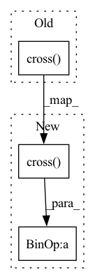

Pattern ID :33141

Before Change
plane1 = torch.cross(pos_ji, pos_j0)
plane2 = torch.cross(pos_ji, pos_jk)
a = (plane1 * plane2).sum(dim=-1) // cos_angle * |plane1| * |plane2|
b = torch.cross(plane1, plane2).norm(dim=-1) // sin_angle * |plane1| * |plane2|
torsion1 = torch.atan2(b, a) // -pi to pi
torsion1[torsion1<=0]+=2*PI // 0 to 2pi
torsion = scatter(torsion1,idx_batch_t,reduce="min")
After Change
plane1 = torch.cross(pos_ji, pos_j0)
plane2 = torch.cross(pos_ji, pos_jk)
a = (plane1 * plane2).sum(dim=-1) // cos_angle * |plane1| * |plane2|
b = (torch.cross(plane1, plane2) * pos_ji).sum(dim=-1) / dist_ji
torsion1 = torch.atan2(b, a) // -pi to pi
torsion1[torsion1<=0]+=2*PI // 0 to 2pi
torsion = scatter(torsion1,idx_batch_t,reduce="min")
In pattern: SUPERPATTERN
Frequency: 3
Non-data size: 3
Instances
Fragment ID: 95812757
Project Name: divelab/dig
Commit Name: 007de06b375cb22f81de08949c4609a3c0af3306
Time: 2022-10-31
Author: wlmei3710@gmail.com
File Name: dig/threedgraph/utils/geometric_computing.py
M Class Name: AnonimousClass
N Class Name: AnonimousClass
M Method Name: xyz_to_dat(4)
N Method Name: xyz_to_dat(4)
M Parent Class:
N Parent Class:
M File Name: dig/threedgraph/utils/geometric_computing.py
N File Name: dig/threedgraph/utils/geometric_computing.py
M Start Line: 50
M End Line: 70
N Start Line: 53
N End Line: 72
'>
Before Change
u3 = c4 - c3
return np.arctan2( np.dot( np.linalg.norm(u2) * u1, np.cross(u2,u3) ),
np.dot( np.cross(u1,u2), np.cross(u2, u3) ) )
def fix_mirrors_torch(preds, stresses, N_mask, CA_mask, C_mask=None, verbose=0):
Filters mirrors selecting the 1 with most N of negative phis.
After Change
u3 = c4 - c3
return np.arctan2( ( (np.linalg.norm(u2, axis=-1, keepdims=True) * u1) * np.cross(u2,u3, axis=-1)).sum(axis=-1),
( np.cross(u1,u2, axis=-1) * np.cross(u2, u3, axis=-1) ).sum(axis=-1) )
def fix_mirrors_torch(preds, stresses, N_mask, CA_mask, C_mask=None, verbose=0):
Filters mirrors selecting the 1 with most N of negative phis.
'>
Fragment ID: 95812756
Project Name: lucidrains/alphafold2
Commit Name: 45a1bffd138fc5bddf28c382a492c539f0a4bc0b
Time: 2021-02-07
Author: ericalcaide1@gmail.com
File Name: alphafold2_pytorch/utils.py
M Class Name: AnonimousClass
N Class Name: AnonimousClass
M Method Name: get_dihedral_numpy(4)
N Method Name: get_dihedral_numpy(4)
M Parent Class:
N Parent Class:
M File Name: alphafold2_pytorch/utils.py
N File Name: alphafold2_pytorch/utils.py
M Start Line: 410
M End Line: 415
N Start Line: 423
N End Line: 428
'>
Before Change
u3 = c4 - c3
return torch.atan2( torch.dot( torch.norm(u2) * u1, torch.cross(u2,u3) ),
torch.dot( torch.cross(u1,u2), torch.cross(u2, u3) ) )
def get_dihedral_numpy(c1, c2, c3, c4):
After Change
u3 = c4 - c3
return torch.atan2( ( (torch.norm(u2, dim=-1, keepdim=True) * u1) * torch.cross(u2,u3, dim=-1) ).sum(dim=-1) ,
( torch.cross(u1,u2, dim=-1) * torch.cross(u2, u3, dim=-1) ).sum(dim=-1) )
def get_dihedral_numpy(c1, c2, c3, c4):
'>
Fragment ID: 95812759
Project Name: lucidrains/alphafold2
Commit Name: 45a1bffd138fc5bddf28c382a492c539f0a4bc0b
Time: 2021-02-07
Author: ericalcaide1@gmail.com
File Name: alphafold2_pytorch/utils.py
M Class Name: AnonimousClass
N Class Name: AnonimousClass
M Method Name: get_dihedral_torch(4)
N Method Name: get_dihedral_torch(4)
M Parent Class:
N Parent Class:
M File Name: alphafold2_pytorch/utils.py
N File Name: alphafold2_pytorch/utils.py
M Start Line: 397
M End Line: 402
N Start Line: 405
N End Line: 410